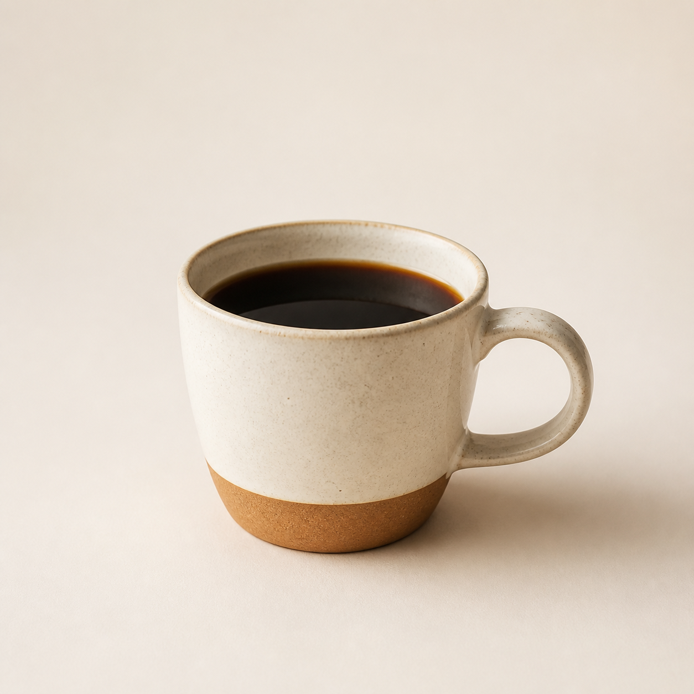
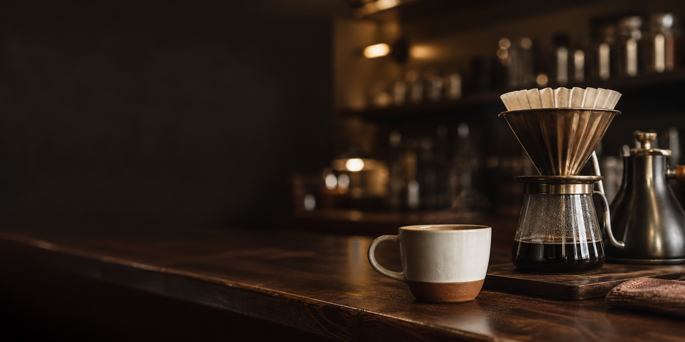
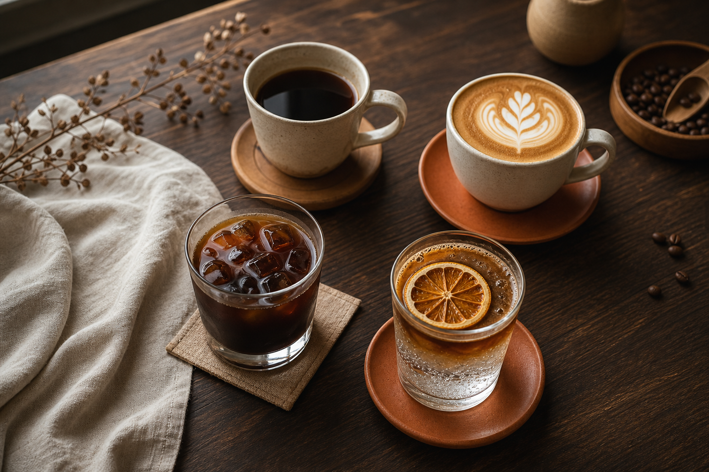
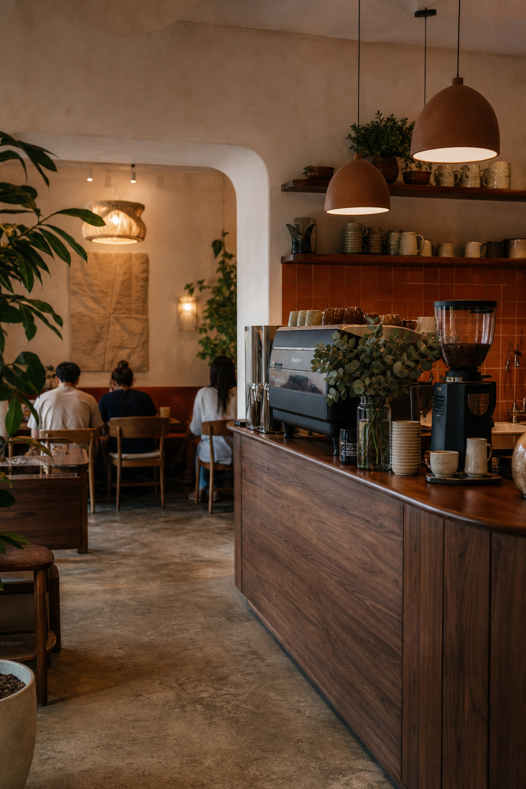
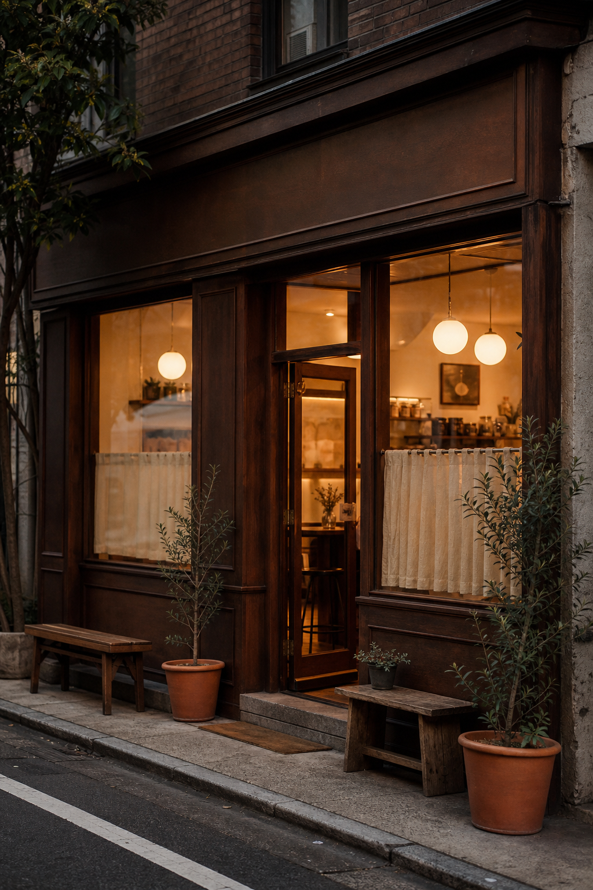

Specialty Coffee & Slow Hours
Deep aroma,
slow hours.
DRIP & DWELL は、豆の香りと静かな時間を味わうための小さなカフェです。
メニューを見る
Scroll
Concept
Daily coffee,
gently tuned.
朝の輪郭を整える一杯、午後に肩の力を抜く一杯。DRIP & DWELL は、 産地の個性を丁寧に引き出しながら、暮らしの中で自然に戻ってこられる場所を目指します。
香りは深く、時間はゆっくり。

Menu
Signature Cups
豆の個性に合わせて設計した、6つの定番。

Space
Walnut counter,
soft light.
Our Craft
Bean to cup, place to stay.
産地が見える豆選び
農園や精製方法まで伝わるシングルオリジンを中心に、季節ごとの香りを小さなロットで仕入れます。
一杯ごとに合わせる抽出
温度、挽き目、注ぎのリズムを豆ごとに調整。注文後の数分も、香りを楽しむ体験として設計します。
地域に馴染む居場所
木、陶器、布、低い照明を重ね、ひとりの滞在にも会話にも寄り添う席の余白をつくります。

Find Us
Quiet street
entrance.
Access
東京都渋谷区代官山町 12-8
- Open
- 8:00 - 19:00
- Closed
- Wednesday
- Station
- 代官山駅から徒歩5分
- Seats
- 18席 / Wi-Fi / Takeout
Contact
Takeout & Private Booking
テイクアウト予約、少人数での貸し切り、撮影利用の相談はこちらから。 内容を確認後、通常1営業日以内にご連絡します。
貸し切りは平日18:00以降、6名から相談可能。展示、読書会、ワークショップ用途にも対応します。